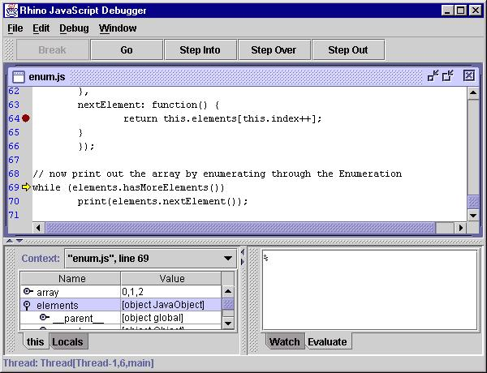

Current limitations:
The Mozilla Rhino JavaScript engine includes a source-level debugger for debugging JavaScript scripts. The debugger is itself a Java program which you may run as
The Rhino JavaScript Debugger can debug scripts running in multiple threads and provides facilities to set and clear breakpoints, control execution, view variables, and evaluate arbitrary JavaScript code in the current scope of an executing script.
Console
Window
The debugger redirects the System.out,
System.in,
and System.err streams to an internal JavaScript
console window which provides an editable command line for you to enter
JavaScript code and view system output. The console window maintains a
history of the commands you have entered. You may move backward and forward
through the history list by pressing the Up/Down arrow keys on the keyboard.
Opening
Scripts
You may select the File->Open menu item
on the menu bar to load JavaScript scripts contained in files. This action
will display a file-selection dialog box prompting you for the location
of a script to load. The selected file will be compiled and displayed in
a new window.
Running
Scripts
You may select the File->Run menu item
on the menu bar to execute JavaScript scripts contained in files. This
action will display a file-selection dialog box prompting you for the location
of a script to execute. The loaded script will be run in a new thread and
control will be given to the debugger on its first instruction.
Controlling
Execution
The debugger provides the following facilities for you
to control the execution of scripts you are debugging:
Step Into
To single step entering any function calls, you may do
any of the following:
Step Over
To single step to the next line in the current function,
you may do any of the following:
Step Out
To continue execution until the current function returns
you may do any of the following:
Go
To resume execution of a script you may do any of the
following:
Break
To stop all running scripts and give control to the debugger
you may do any of the following:
Break on Function Enter
Selecting Debug->Break on Function Enter will give control to the debugger whenever the execution is entered into a function or script.
Break on Function Exit
Selecting Debug->Break on Function Return will give control to the debugger whenever the execution is about to return from a function or script.
Moving
Up and Down the Stack
The lower-left (dockable) pane in the debugger main window
contains a combo-box labeled "Context:" which displays the current stack
of the executing script. You may move up and down the stack by selecting
an entry in the combo-box. When you select a stack frame the variables
and watch windows are updated to reflect the names and values of the variables
visible at that scope.
Setting
and Clearing Breakpoints
The main desktop of the debugger contains file windows
which display the contents of each script you are debugging. You may set
a breakpoint in a script by doing one of the following:
You may clear breakpoint in a script by doing one of the following:
Viewing
Variables
The lower-left (dockable) pane in the debugger main window
contains a tab-pane with two tabs, labeled "this" and "Locals". Each pane
contains a tree-table which displays the properties of the current object
and currently visible local variables, respectively.
This
The properties of the current object are displayed in
the
this table. If a property is itself a JavaScript object
the property may be expanded to show its sub-properties. The this
table is updated each time control returns to the debugger or when you
change the stack location in the Context: window.
Locals
The local variables of the current function are displayed
in the Locals table. If a variable is itself a JavaScript
object the variable may be expanded to show its sub-properties. The Locals
table is updated each time control returns to the debugger or when you
change the stack location in the Context: window
Watch
Window
You may enter arbitrary JavaScript expressions in the
Watch:
table located in the lower-right (dockable) pane in the debugger main window.
The expressions you enter are re-evaluated in the current scope and their
current values displayed each time control returns to the debugger or when
you change the stack location in the Context: window.
Evaluation
Window
The Evaluate pane located in the lower-right
(dockable) pane in the debugger main window contains an editable command
line where you may enter arbitrary JavaScript code. The code is evaluated
in the context of the current stack frame. The window maintains a history
of the commands you have entered. You may move backward or forward through
the history by pressing the Up/Down arrow keys on the keyboard.